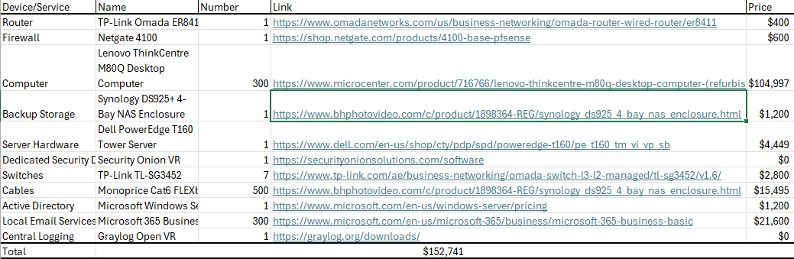
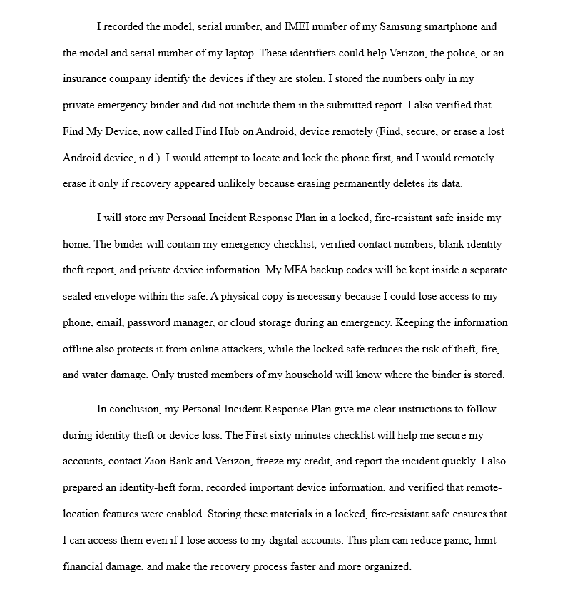
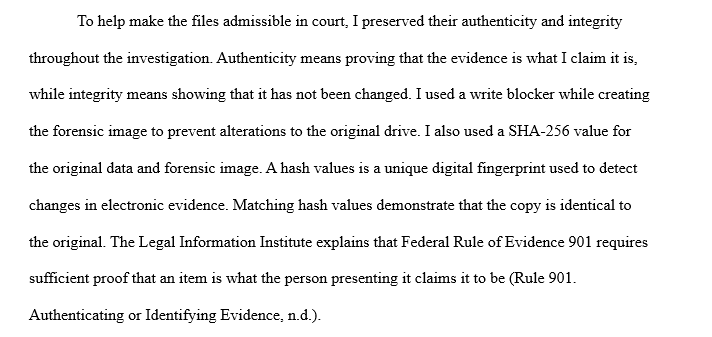
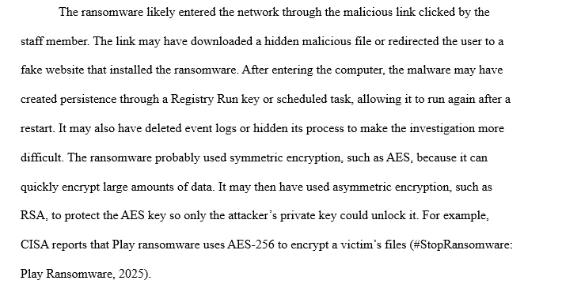

Network Security Program Objectives
This page highlights my Network Securtiy projects and explains how they demonstrate the skills I developed at UAT.
Objective 1: Network Infrastructure Design
Create a network infrastructure design communications document that includes identified hardware components, connections to outside world, identified physical layer connectivity (media) and addressing, including operational and security components in the design.
Project 1: IT Department Network Design

Objective 2: Security Tools and Testing
Install, configure and test security hardware and software tools with supporting documentation such as port scanners, vulnerability detection systems, intrusion detection systems, firewalls, system hardening, anti-virus tools, patch management, auditing and assessment.
Project 1: Windows 11 Security Hardening

Objective 3: Security Automation
Construct, implement and document a script or a program to automate a security-related process or other tasks such as installation, administration, management, mapping resources, logon scripts, patch management, updates, auditing, analysis and assessment.
Project 1: Active Directory Inactive Account Detection Using Powershell

Objective 4: Security Policies and Procdures
Create a policy or procedure that addresses events such as: a disaster recovery plan, a business continuity plan, an incident response policy, an acceptable usage document, an information security policy, a physical security policy, assessments or troubleshooting procedures.
Project 1: Personal Incident Response Plan

Objective 5: Legal and Ethical Security Practices
Develop a research report or implementation plan concerning legal and ethical best practices and mandated requirements that pertain to information security.
Project 1: Digital Forensics: Corporate Espionage Investigation

Objective 6: Security Threats and Mitigation
Research, document, test and evaluate several current industry information security based threats, risks, malicious activities, covert methodology, encryption technologies, mitigation techniques or unconventional tactics to prevent loss of sensitive information and data confidentiality, integrity and availability.
Project 1: Ransomware Threat Analysis and Mitigation
